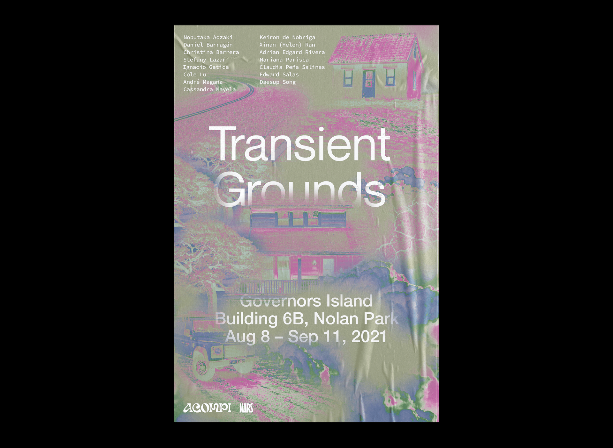
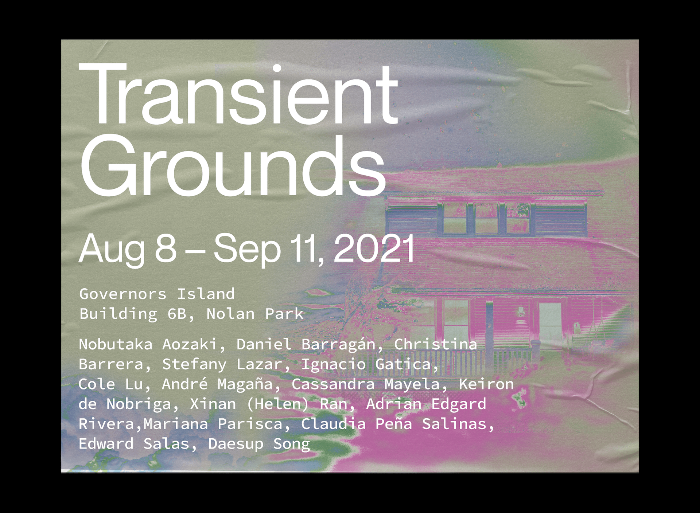
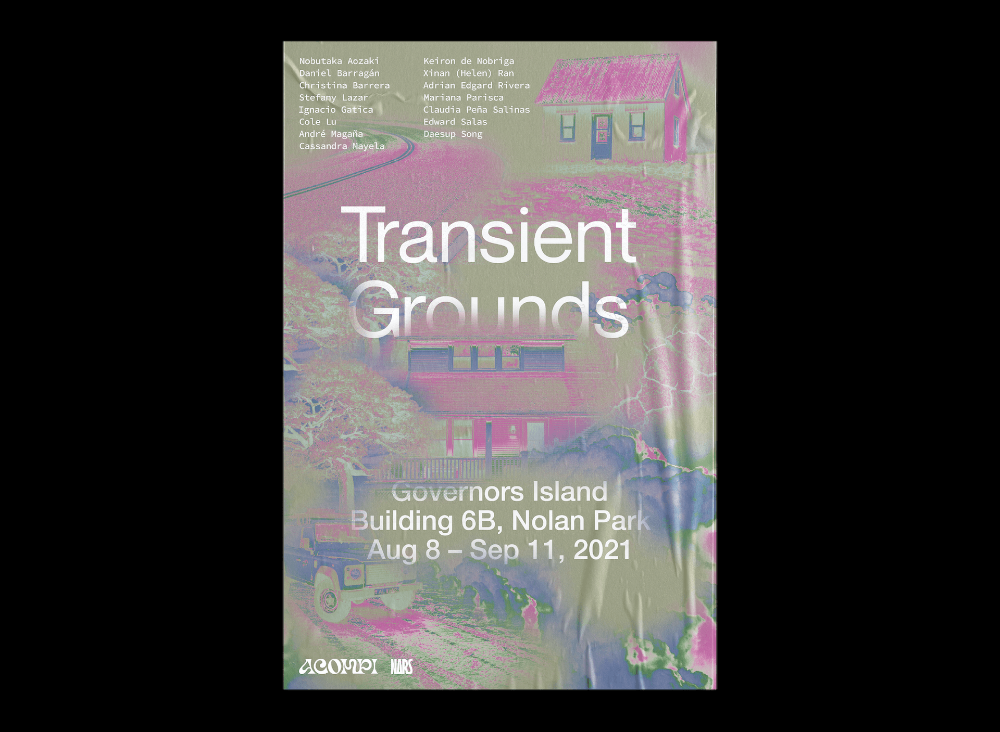
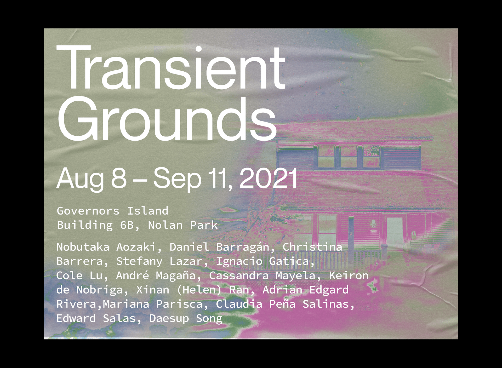

Transient Grounds is an exhibition of contemporary art presented by ACOMPI, a global curatorial project, in collaboration with NARS Foundation.
Sited in a former home on Governor's Island, Transient Grounds houses the histories preserved by 15 immigrant, first-generation, and borderland artists. The works deal in memory, hybridity, and belonging, interrogating the persistance of cultural erosion and colonialism.
The exhibition's identity was designed to embed within the concrete landscapes of NYC and to showcase architectural fragments of historic Governor's Island. Its hybrid relationship to place responds to the exhibited works, while flourescent accents echo ACOMPI's visual voice.
Read statements from ACOMPI and NARS Foundation
Featured by artnet and New York Magazine
 


